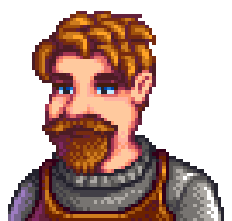
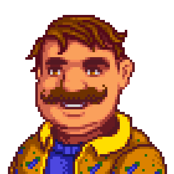
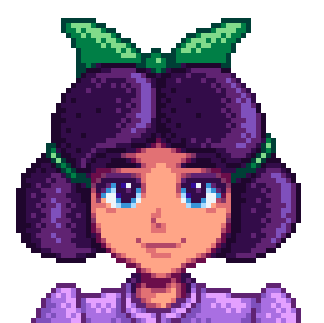
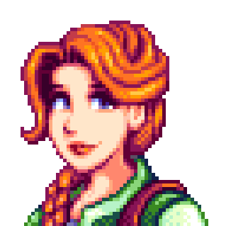
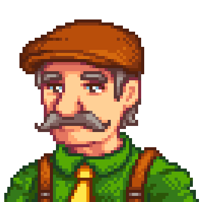
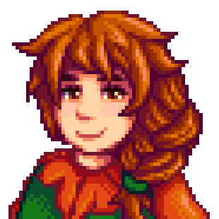
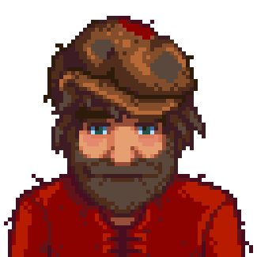

Жители города Пеликан
Дари жителям любимые подарки, чтобы подружиться быстрее!
Эбигейл
День рождения: 13 числа осени
Любит: аметист, банановый пудинг, пирог с ежевикой, шоколадный торт, «Монстрономикон», иглобрюх, тыква, острый угорь
Алекс
День рождения: 13 числа лета
Любит: полный завтрак, ужин из лосося
Кэролайн
День рождения: 7 числа зимы
Любит: рыбный тако, зелёный чай, летний цветок, тропическое карри
Клинт

День рождения: 26 числа зимы
Любит: аметист, аквамарин, соус из артишоков, изумруд, ризотто из папоротника, золотой слиток, иридиевый слиток, нефрит, омни-геод, рубин, топаз
Деметриус
День рождения: 19 числа лета
Любит: суп из фасоли, мороженое, рисовый пудинг, клубника
Дварф
День рождения: 22 числа лета
Любит: аметист, аквамарин, изумруд, нефрит, лавовый угорь, лимонный камень, омни-геод, рубин, топаз
Эллиот
День рождения: 5 числа осени
Любит: крабовые котлеты, утиное перо, омар, гранат, чернила кальмара, суп том кха
Эмили
День рождения: 27 числа весны
Любит: аметист, аквамарин, ткань, изумруд, нефрит, яйцо попугая, рубин, бургер выживания, топаз, шерсть
Эвелин
День рождения: 20 числа зимы
Любит: свёкла, шоколадный торт, алмаз, роза фей, изюм, начинка, тюльпан
Гас

День рождения: 8 числа лета
Любит: алмаз, эскарго, рыбный тако, апельсин, тропическое карри
Джордж
День рождения: 24 числа осени
Любит: жареные грибы, пастернак
Хейли
День рождения: 14 числа весны
Любит: кокос, фруктовый салат, розовый торт, подсолнух
Харви
День рождения: 14 числа зимы
Любит: кофе, маринованные овощи, суперобед, трюфельное масло, вино
Джас

День рождения: 4 числа лета
Любит: древняя кукла, коробка с феей, роза фей, розовый торт, сливовый пудинг, странные куклы
Джоди
День рождения: 11 числа осени
Любит: обсидиан, тыквенный суп
Лея

День рождения: 23 числа зимы
Любит: козий сыр, маффин с маком, салат, жаркое, трюфель, овощное рагу, вино
Лео
День рождения: 26 числа лета
Любит: утиное перо, манго, страусиное яйцо, яйцо попугая, пои
Льюис

День рождения: 7 числа весны
Любит: осенний урожай, тушёный батат, зелёный чай, острый перец, овощное рагу
Линус
День рождения: 3 числа зимы
Любит: черничный тарт, плод кактуса, кокос, блюдо моря, «Шведский стол из переулка», батат
Марни

День рождения: 18 числа осени
Любит: обсидиан, тыквенный суп
Мару
День рождения: 10 числа лета
Любит: батарейка, цветная капуста, сырная цветная капуста, алмаз, гаджет дварфа, золотой слиток, иридиевый слиток, угощение шахтёра, фаршированные перчики, радиоактивный слиток, ревеневый пирог, клубника
Пэм
День рождения: 18 числа весны
Любит: пиво, плод кактуса, тушёный батат, медовуха, светлый эль, пастернак, суп из пастернака, пинья колада
Пенни
День рождения: 2 числа осени
Любит: алмаз, изумруд, дыня, мак, маффин с маком, красная тарелка, корнеплоды на блюде, песчаная рыба, суп том кха, все книги
Пьер
День рождения: 26 числа весны
Любит: жареные кальмары, каталог цен
Робин
День рождения: 21 числа осени
Любит: козий сыр, персик, спагетти, «Секрет Вуди»
Сэм
День рождения: 17 числа лета
Любит: плод кактуса, кленовый батончик, пицца, тигровый глаз
Сэнди
День рождения: 15 числа осени
Любит: крокус, нарцисс, манго с липким рисом, душистый горошек
Себастьян
День рождения: 10 числа зимы
Любит: обсидиан, тыквенный суп
Себастьян
День рождения: 10 числа зимы
Любит: лягушачья икра, замороженная слеза, обсидиан, тыквенный суп, сашими, яйцо Пустоты
Винсент
День рождения: 10 числа весны
Любит: клюквенная конфета, лягушачья икра, имбирный эль, виноград, розовый торт, улитка
Вилли

День рождения: 24 числа лета
Любит: сом, алмаз, золотой слиток, иридиевый слиток, жемчужины моря, медовуха, осьминог, морской огурец, осётр, тыква, книга «Искусство ловли крабов»
Волшебник
День рождения: 17 числа зимы
Любит: книга тайн, фиолетовый гриб, солнечная эссенция, супер-огурец, эссенция Пустоты